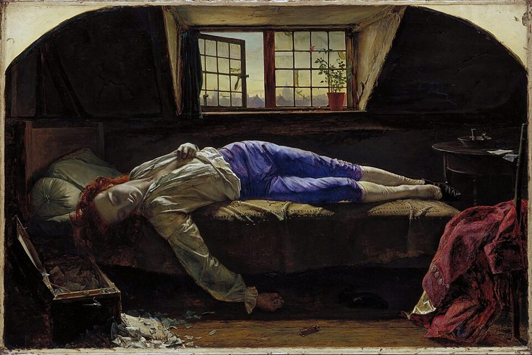
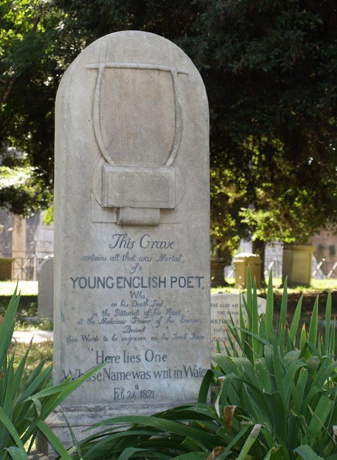
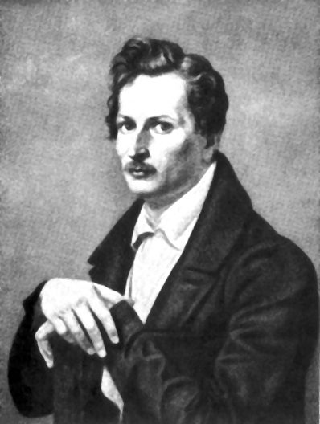
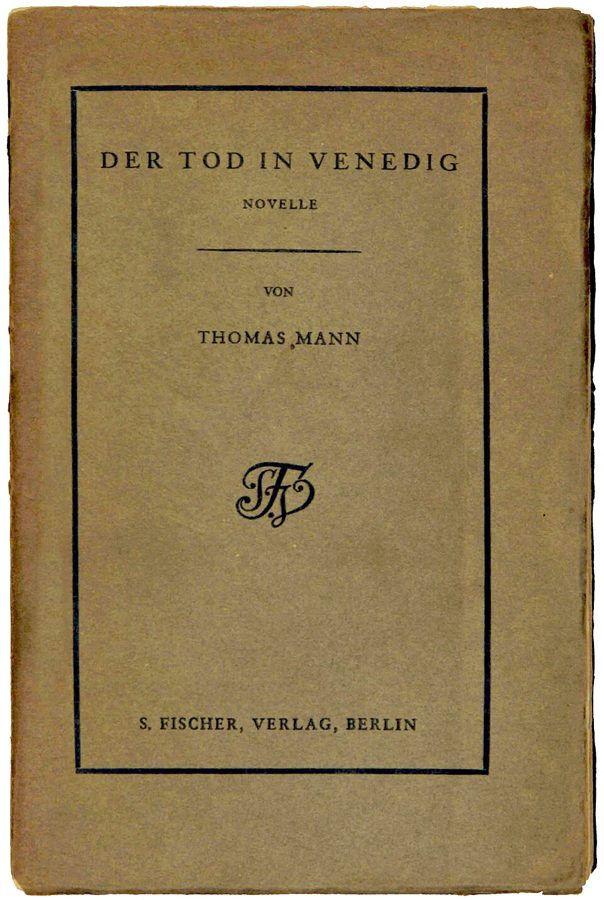

这一页在做什么
这一页是第 2 章的最后两节。前一节从「人生中点」反过来问：没活到中点的人呢？作者借十八世纪的天才美学讲早死的诗人（查特顿、济慈），再拿贝恩列的长寿作家名单、普拉滕的一首十四行诗和托马斯·曼的《死于威尼斯》作对照。后一节讲奥地利诗人巴赫曼：诗集《延期的时间》里的两首诗，和小说《第三十年》。读的时候抓两条线：艺术是耗命还是养命；时间为什么被写成一笔债。

Henry Wallis 1856 年的油画《查特顿》：服毒死去的少年诗人，地上散着撕碎的纸。这一页第一个细讲的人就是他。Henry Wallis，公有领域，维基共享资源 读之前：这一页在全书的哪里
上一页停在王尔德的牢房：一天长得像一年。这一页第 142 段，作者自己回头点名前面讲过的「人生中点」（但丁、彼特拉克、荷尔德林、歌德，见 02a ），换个方向问：没活到中点的人呢？第 178 段《第三十年》又把人生中点提前到三十岁，还拉来《浮士德》里的学士（浮士德见 02b ）。巴赫曼诗里那笔要还的「债」，到第 8 章讲期限 时才正式立成主题。
天才早死，作家长寿：艺术是在耗命，还是在养命？如果时间是一笔随时会被讨回的债，人该怎么过？
读的时候带着这几个问题。不用先找答案，读完回来对照「检查一下理解」。
作者说天才「不该变老」，这是作者自己的主张，还是他在转述某一种美学？§8
贝恩那份长寿名单想说明什么？作者为什么紧接着引普拉滕的诗，又搬出托马斯·曼？§8
英译把诗题译成 Revocable Time，可诗行里又有 payment is due。原题到底是什么意思，英译丢了什么？§9
《第三十年》的主人公出走一年，他找到「真正的自己」了吗？作者对这篇小说满意吗？§9
这一页的路线
这一页两节，走法是「一组对照，再加一个新话题」。§8 先从人生中点反过来问没活到中点的人，借天才美学讲早死，列一长串名单，再挑查特顿（经维尼的剧）和济慈细看；两处花饰之后突然换到另一头，讲贝恩列的长寿作家，夹一首普拉滕的十四行诗，最后用托马斯·曼的《死于威尼斯》收住：这一篇站在两头中间，作家活得长，作品还是没写完。§9 换人也换话题：巴赫曼的两首诗把时间写成延期的债，读的时候会觉得从「长短」跳到了「欠债」；花饰之后的《第三十年》又绕回人生中点。
§8 第 142–164 段
§9 第 165–184 段
早死的天才
长寿的作家
借来的时间
天才美学
早死名单
查特顿
济慈
贝恩名单
普拉滕
托马斯·曼
延期的时间
秋季演习
第三十年
回到中点
本站示意图。折线是阅读顺序；竖虚线是原书的三处花饰分隔，竖实线分开 §8 和 §9。《死于威尼斯》画在长寿一行，因为作者说托马斯·曼本该进贝恩的名单。 作者落在哪： 作者不替「艺术耗命还是养命」下判断：两张名单并排摆着，转述贝恩那边的理论时只说长寿「也许」正是艺术之功，紧接着就摆出普拉滕的怀疑。§9 落在巴赫曼的诗上：时间是一笔暂缓清偿、随时可能被讨回的债，诗里的人不反抗，只是认了。
分节地图
这一页是原书第 2 章的第 8–9 节。粗体是这一节的主角；斜体是英文这一节开头的几个词，在电子书里搜它就能跳到那里；节里的转折用段号点出来。读完打个勾。
早死的查特顿、济慈，长寿的贝恩名单约 1400 词 Earlier, we spoke of the midpoint … 第 147 段起是济慈，第 151 段起换到长寿的作家，第 162 段起是托马斯·曼。 巴赫曼的诗《延期的时间》和小说《第三十年》约 1300 词 In 1953, one year after giving … 第 173–177 段读两首诗，第 178 段起换到小说《第三十年》。
先用中文过一遍：这一页的概念
作者常常一笔带过、默认你懂的概念，这里先从书外讲一遍：它从哪来，是什么意思。它在这一页起什么作用，看每块最后一句。讲过的概念都汇总在概念汇总 。
§8 天才美学 genius aesthetics（Genieästhetik） 十八世纪下半叶在英国和德国兴起的一种艺术观。英国诗人 Edward Young 1759 年的《论独创性写作》说，原创的天才像植物一样自己长出来，不靠模仿和规则；德国「狂飙突进」一代把莎士比亚奉为这样的天才；康德在《判断力批判》（1790）里说，天才是给艺术立规则的天赋，这种本事学不来。它正好和希腊人的技艺 相反：技艺靠规则、靠多年苦学，所以「长」；天才不学而能，用不着长时间。好比一边是靠年资熬出来的工程能力，一边是传说里的「天才少年」。
在这一页： 第 142 段，作者说照这种美学天才不受时间法则管，年轻的歌德就是它的样板；第 143 段由此推出天才似乎注定早死。
§9 延期的时间 gestundete Zeit（Stundung，auf Widerruf） 德文 stunden 是钱款上的用语：债权人准许欠债人推迟付款，名词是 Stundung，法律上指把一笔债的到期日往后推。所以 gestundete Zeit 是「被宽限出来的时间」：债照样要还，只是晚一点。auf Widerruf 是「保留撤回权」：这份宽限债权人随时可以收回，一收回就得马上还。巴赫曼把两个词连在一起：我们活着的时间是宽限来的，宽限还随时可能取消。英语说 on borrowed time，也是这层意思。和期限不同的是：期限至少有个定好的截止日，这里连截止日都不由你定。
延期的时间（gestundet）
借下这笔债
原定还款日
延后的新日期
债权人准许暂缓清偿（Stundung）
auf Widerruf：随时可以收回，收回就得马上还
本站示意图。英译的诗题 Revocable Time 只译出了下面那几支虚线箭头（可收回），丢了上面那条弧线（这是一笔被宽限的债）。 在这一页： 第 165 段的诗集名；第 174 段作者说，到爱人「甘愿」沉进沙里为止，诗里每一行都指向这种时间；第 177 段又用 until called in。「期限」这个主题到第 8 章才立起来，见期限 。
书里的人和作品
按在书里出现的顺序排，标题前是节号。作品只讲到读懂这一节需要的程度。
§8 早死的名单第 144 段先提四位早死的音乐家和画家（舒伯特、莫扎特、拉斐尔、凡·高），然后只列作家，连死于暴力、意外和自杀的也算进去，一共二十一位，从英、法、德一直排到俄国和西班牙。括号里的岁数大多是卒年减生年：照生日算，查特顿死时 17 岁，济慈 25 岁。名单后面引了德国历史学家 Koselleck 的一句话，大意是：一生太短，传记写不出来，只剩哀悼。
Reinhart Koselleck 1923–2006 德国历史学家，以「概念史」研究出名。书里引的是他 2000 年的文集《时间的层次》（Zeitschichten）。
20
40
60
80
100
岁
人生中点 35
诗篇：七十
早死的天才（§8 第 144 段）
查特顿
济慈
长寿的作家（贝恩）
歌德
萧伯纳
本站示意图，一个点是一位作家，岁数照书里写的（多是卒年减生年，按生日算有几位要少一岁）。上面一行是第 144 段那份名单，下面一行是第 151 段贝恩名单里点到名字的九位。 §8 查特顿和维尼的剧本《查特顿》查特顿是英国布里斯托尔人，少年时假托一位 15 世纪的僧人 Thomas Rowley 写诗，后来到伦敦卖文为生，1770 年服毒自杀，不满 18 岁。浪漫派把他奉为被社会逼死的天才，页首那幅画就出自这股热潮。法国作家维尼 1835 年写的剧本《查特顿》在法兰西喜剧院首演，很成功；剧里加了他和凯蒂·贝尔（Kitty Bell）的爱情，还有一位八十岁的贵格会老人。作者拿它说明：生命短是整部戏的主导动机。
查特顿 Thomas Chatterton，1752–1770 英国诗人，这一页名单上最年轻的一位。书里说他怀疑自己的天才，只留下几首诗。
维尼 Alfred de Vigny，1797–1863 法国浪漫派诗人、小说家、剧作家。第 145–146 段讲的就是他的剧本。
§8 济慈济慈是英国浪漫派诗人，学过医，1821 年 2 月在罗马死于肺结核，年仅 25 岁，葬在罗马的新教徒公墓。他早年写过一首十四行诗《致查特顿》。第 148–149 段那首 When I have fears 写于 1818 年 1 月，他那时还在英国；书里说他「在罗马」写了这首诗，对不上：他 1820 年秋天才到罗马。诗里怕的是还没把满脑子的诗写出来就死去，正好接上查特顿那句「什么都没写出来」。
济慈 John Keats，1795–1821 英国诗人。第 147–150 段：作者拿他和查特顿并排，又用他的十四行诗写「来不及」的恐惧。

济慈在罗马新教徒公墓的墓碑。碑上没有他的名字，只说这里葬着一位「年轻的英国诗人」，和那句「这里躺着一个名字写在水上的人」。Piero Montesacro，CC BY-SA 3.0，维基共享资源 §8 贝恩和他的长寿名单贝恩是德国表现主义诗人，本职是医生，第 152 段特意点出这一点。1954 年他六十八岁，写了《衰老作为艺术家的问题》（Altern als Problem für Künstler），列出一长串活到八九十岁的作家：歌德、托尔斯泰、纪德、雨果、伏尔泰、萧伯纳……他把这些人的晚年分成两类：古典式的成熟和明朗，或者疲惫和才思衰退。第 151 段末尾作者顺手提到 Schirrmacher 2004 年讲老龄社会的书《玛土撒拉阴谋》。贝恩的文章还在版权期内，本站只说大意。
贝恩 Gottfried Benn，1886–1956 德国诗人、医生。第 151–152 段：作者拿他的长寿名单和前面的早死名单对照。
§8 普拉滕的十四行诗普拉滕伯爵是德国诗人，最擅长十四行诗、颂歌这类讲究格律的诗体，后半生大多住在意大利，1835 年死在西西里的锡拉库萨。第 153–161 段是他的一首十四行诗，书里说贝恩在文章里引过。诗里说：谁不是把一半人生丢在梦、热病和虚掷的光阴里？幸福即使真的来了，凡人也承受不起。作者把它叫作一句「怀疑的判词」，放在贝恩的乐观后面。
普拉滕 August Graf von Platen，1796–1835 德国诗人。书里写作 August Graf Platen。

普拉滕，Moritz Rugendas 约 1830 年画的油画像。Johann Moritz Rugendas，公有领域，维基共享资源 §8 托马斯·曼和《死于威尼斯》托马斯·曼是德国小说家，1929 年获诺贝尔文学奖，1955 年去世，所以 1954 年贝恩写文章时他还在世。《死于威尼斯》写成名的老作家阿申巴赫（Gustav von Aschenbach）到威尼斯度假，迷上一个波兰少年塔齐奥（Tadzio）；城里闹起霍乱，他不肯走，最后死在海滩边。这部中篇 1912 年先在杂志上连载，1913 年出单行本，书里写 1913。第 162 段说的「代价」，出自曼更早的中篇《托尼奥·克勒格尔》（1903）。
托马斯·曼 Thomas Mann，1875–1955 德国小说家。第 162–164 段：作者说他本该进贝恩的名单，又拿他的中篇写活得再长也写不完。

1913 年 S. Fischer 出版社印的《死于威尼斯》平装本。Foto H.-P.Haack，CC BY-SA 3.0，维基共享资源 §9 巴赫曼和《延期的时间》巴赫曼生在奥地利的克拉根福，在维也纳读哲学，博士论文写的是海德格尔。1952 年她在战后德语作家的聚会「四七社」上朗读，1953 年得了这个社的奖，同年秋天出版第一本诗集《延期的时间》，同名诗当年 3 月已经登在报上。后来她长住罗马，1973 年在罗马死于火灾烧伤。第 175 段说《秋季演习》在诗集里紧排在同名诗前面，本站没有核对。英语里这本诗集常译作 Borrowed Time（大英百科就这样译），和这本英译的书名是同一个说法。
巴赫曼 Ingeborg Bachmann，1926–1973 奥地利诗人、小说家。§9 整节都讲她：两首诗，一篇小说。
巴赫曼，1960 年 5 月在汉堡国家歌剧院的记者会上。Fritz Peyer，CC BY-SA 4.0，维基共享资源
多叶羽扇豆。诗里的 Lupinen 就是这类花，第 173 段说它们像「花烛」。照片与本书无关。Annabell Hormann / korina.info，CC BY-SA 4.0，维基共享资源
§9 小说《第三十年》《第三十年》（Das dreißigste Jahr）是巴赫曼的短篇，收在 1961 年出版的同名小说集里，1956 年起动笔。第 178 段写作 1953，又说她是「几年后」回到这个主题，两处对不上，1961 年才合「几年后」。小说写一个没有名字的年轻人，在满三十岁前的一年里丢下一切出门（罗马、热那亚、维也纳）。巴赫曼生于 1926 年 6 月，1956 年满三十，第 179 段说她自己的第三十年和小说那一年大致重合，这一点对得上。第 178 段「过了三十就等于死了」，是《浮士德》第二部里学士的话。
图里的引文
下面这几段在你的电子书里是图片，长按查不了词，也搜不到。每块先说它在屏幕上的位置，再逐行给中文意思；行首的斜体是图里这一行开头的几个词，用来和图对上。古人的诗本站据原作的语言译，不从英译转译；巴赫曼的作品还在版权期内，只给大意。
§8 第 148–149 段 · 济慈的十四行诗（首行 When I have fears that I may cease to be，1818 年） · 英文原作在第 147 段末尾（…in Rome he wrote the following sonnet:）之后，两张图。济慈写这首诗时人在英国，见上面「济慈」一块。
When I have fears 每当我害怕，自己也许就此不在了，Before my pen … 赶在我的笔把满溢的头脑拾穗拾尽之前，Before high-piled books, … 赶在高高堆起的书用文字Hold like rich … 像丰实的粮仓那样，装下熟透的谷粒之前；When I behold, … 每当我望见夜空那张缀满星星的脸上，Huge cloudy symbols … 浮着一部崇高传奇的巨大、云雾般的象征，And think that … 想到我也许活不到用偶然的神奇之手Their shadows, with … 把它们的影子描画下来；And when I … 每当我感到，你这只美一个时辰的人儿啊，That I shall … 我再也见不到你，Never have relish … 再也尝不到那不假思索的爱情Of unreflecting love; 的魔力：这时，在广阔世界的岸边，Of the wide … 我独自站着，想啊想，Till love and … 直到爱情和名声都沉入虚无。
大意： 前十一行半是三个「每当」：怕写不完诗、怕描不下星空的意象、怕再见不到爱人；最后两行半才落到结论：独自站在世界的岸边，想到爱和名都沉入虚无。
glean’d
第 2 行
拾尽（麦穗）
glean 是收割后在田里拾剩下的麦穗。把头脑比作一片麦田，下面几行的「粮仓」「熟透的谷粒」接着这个比喻。’d 是诗里省掉的 e，即 gleaned。
charactery
第 3 行
文字，书写符号
古词，指用字母、符号把东西记下来。莎士比亚也用过。
garners
第 4 行
粮仓
诗里的旧词，今天说 granary。
fair creature of an hour
第 9 行
只美一个时辰的人儿
creature 在这里是对人的爱称，不是「生物」。of an hour 说她的美（也许还有这段情）都只是一时的。
faery
第 1 行
仙境般的，魔法的
fairy 的古体拼法，济慈和斯宾塞爱用。
unreflecting
第 2 行
不假思索的
reflect 是反省、思量。这种爱不想后果，和最后一行独自「想」到一切成空正好相对。
§8 第 153–161 段 · 普拉滕的一首十四行诗（首行 Wer wußte je das Leben recht zu fassen） · 前五张英译，后四张德文原作在第 152 段末尾（…in one of his finest poems:5$）之后，一共九张图：前五张是英译，后四张是德文原诗。下面逐行跟德文走，本站据德文译。
Wer wußte je 谁曾懂得把生活真正抓在手里？Wer hat die 谁不曾把它的一半丢掉，Im Traum, im 丢在梦里、热病里、和蠢人的闲谈里，In Liebesqual, im 丢在相思的煎熬里、空空挥霍的光阴里？Ja, der sogar, 是的，即使是那个平静从容、Mit dem Bewußtsein, 生来就知道自己该做什么、Frühzeitig einen Lebensgang 早早选定了人生道路的人，Muß vor des 面对人生的矛盾，也免不了脸色发白。Denn jeder hofft 因为人人都盼着幸福朝自己微笑，Allein das Glück, 可是幸福真的来了，要承受它，Ist keines Menschen, 不是凡人做得到的事，那该是神的事。Auch kommt es 何况它从来不来；我们只是盼望，只是冒险：Dem Schläfer fällt 它绝不会从屋顶掉到睡觉的人身上，Und auch der 追着它跑的人也捉不住它。
英译和原诗的出入：第 2 行德文是「丢掉」（verloren），英译作「挥霍」；第 11 行德文用虚拟式 wäre（「那该是」神的事），英译说成了直陈的「只属于神」；第 13 行德文的「从屋顶掉下来」，英译只留下「落到头上」。第 2 行的「一半」（Hälfte），和第 2 章开头荷尔德林的诗题《生命之半》（Hälfte des Lebens）是同一个词，这是本站的提示，书里没说。
Toren
第 3 行
（德文）蠢人
单数 Tor，旧式书面语，今天口语说 Narr、Dummkopf。不要和 Tor（门）、Tore（球门）混。
Zeitverprassen
第 4 行
（德文）挥霍光阴
prassen 是大吃大喝、挥霍，加上 Zeit 就是把时间像钱一样乱花。这一行和全书「时间像钱」的比喻接得上。
erblassen
第 4 行
（德文）脸色发白
blass 是苍白。vor etwas erblassen：在某样东西面前吓得变了脸色。
wäre Gottes Sache
第 3 行
（德文）那该是神的事
wäre 是虚拟式：说的是「要承受得了，得是神才行」，不是断言幸福属于神。
vom Dache fallen
第 2 行
（德文）从屋顶掉下来
这一行和下一行一对：睡着等，幸福不会从天而降；拼命追，也追不到。
§9 第 166–172 段 · 巴赫曼《延期的时间》（Die gestundete Zeit，1953）全诗 · 前四张英译，后三张德文原作在第 165 段末尾（…briefly this volume's title poem:）之后，一共七张图：前四张是英译；第五张顶上多了一行英文（英译的第一行），空一行后才是德文第一节；后两张是德文的第二节和最后两节。
大意： 更艰难的日子要来了，宽限来的、随时可被收回的时间出现在天边。你得系好鞋，把狗赶回去，把鱼扔进海，熄灭羽扇豆，别回头；爱人沉进了沙里。
原诗 24 行，分四节（11、7、5、1 行），头一行和最后一行都是「更艰难的日子要来了」。英译和原诗有几处出入：带 auf Widerruf 的那一行在原诗里出现两次，英译译了两种说法，第一张图里是「按小时算到该付款的时间」，第二张图里是「延期到该付款的时间」，两处都没译出 auf Widerruf（可随时收回）；英译的「勒紧腰带」，德文是「系好鞋」（准备动身）；英译把狗「赶进沼泽」，德文是把狗赶回海边沼泽地的农庄（Marschhöfe）。第六张图里的 befielt 是印错了，应为 befiehlt（命令）。
payment is due
第 2 行
该付款了，到期了
due 是「到期应付的」。英译的诗题 Revocable Time 丢了「债」，诗行里靠这几个词把债的意思留了下来。
Schnür deinen Schuh
第 2 行
（德文）系好你的鞋
准备上路、要走了的意思。英译作「勒紧腰带」，那是「过苦日子」，意思偏了。
Lösch die Lupinen
第 5 行
（德文）熄灭羽扇豆
löschen 是熄灯、灭火。羽扇豆的花序像蜡烛，第一节说它们「光很微弱」，这里干脆把最后一点光也灭掉。第 174 段说这是在认命，甚至主动加快。
§9 第 176 段 · 巴赫曼《秋季演习》（Herbstmanöver）里的两行 · 上面英译，下面德文原作在第 175 段末尾（…In this poem we read:）之后，一张图，英文两行，空一行，德文两行。
大意： 时间会创造奇迹；可要是它来得不是时候，带着罪责的敲门声，我们就不在家。
「不在家」是德文里常见的说法：有人敲门，我们装作不在、不开门。第 177 段作者就是这样读的：罪责来敲门，我们不应。
词与短语
你用 Kindle，单个生词长按就能查，这里只收词典帮不上的：每个词都认识、合起来不懂的说法，学术腔，没翻译的外文，典故。斜体小字是原句里连续的几个词，错字照电子书原样，搜它就能跳到那里。图里的词在上面「图里的引文」里。
§8 早死的查特顿、济慈，长寿的贝恩名单
genius aesthetics
… according to the firm conviction of eighteenth-century …
天才美学
十八世纪的一种艺术观，见概念块「天才美学」。作者加了引号，表示这是那个时代的说法。
not subject to the rules of time
… is not subject to the rules …
不受时间法则约束
be subject to 是「受……支配」。天才连规则都不用学，时间的规则也管不着它。
original genius
… the ideal model of original genius …
原创天才
十八世纪的术语，德文叫 Originalgenie，指不模仿前人、自成一格的天才。
surplus life-time
… the point of so much surplus …
多出来的生命时间
surplus 是记账的词：盈余、过剩。作者用经济的口气问：年轻时话都说完了，剩下的一大截寿命还有什么用？
certify
… through his tragic death to certify …
（用死来）证明、认证
certify 本是出具证明、盖章认证。说天才用悲剧性的早死给自己的天才「盖章」，带点讽刺的味道。
on a low flame
… no energy remains to carry on …
小火慢熬地（过一生）
前一句说艺术「烧」掉生命（consumes），这里接着用火的比喻：精力烧光了，没剩什么能用小火慢慢熬完长长的一生。
overlaid by mourning
… biography is overlaid by mourning, because …
被哀悼盖住了
Koselleck 的意思：一生太短，没有足够的事可写成传记，人们写的多半是惋惜。
doubles the catastrophe
… and doubles the catastrophe in this …
让悲剧的结局成了双份
catastrophe 在戏剧术语里是悲剧的结局，不只是「灾难」。查特顿死了，凯蒂·贝尔也随他死去，所以是双份。
leitmotif
The leitmotif of the whole dramatic …
主导动机
德文借词，原是瓦格纳歌剧里反复出现、代表某个人物或意念的旋律，引申为贯穿全篇的主题。
a theft of time
… of time, which is slipping away …
时间被偷走
每一分钟不用来写诗，查特顿都觉得是被偷走的。这又是把时间当成财物。
have at hand
… the poison he has long had …
（早就）备在手边
at hand 是「在手边、随时可用」。毒药早就备好了，是剧里一直悬着的结局。
it falls to someone to
It falls to the Quaker to …
由某人来（做某事）
fall to 是「落到某人头上、轮到某人」，不是「倒向」。收场的那句话轮到贵格会老人说。
the eternal city
He lies buried in Rome, the …
「永恒之城」，罗马的别称
作者给 eternal 加了引号：只活了 25 岁的人，葬在叫「永恒」的城里。本站读出一点苦涩的对照，书里没明说。
group portrait
An alternative to this group portrait …
群像
不是一幅画，是指前面那份早死作家的名单。下面的长寿名单是另一幅「群像」。
venerable (gesegnet) age
… (gesegnet) age, he names first …
（德文）高寿
gesegnet 字面是「蒙福的」，ein gesegnetes Alter 是德文里称高寿的套话，英译作 venerable（可敬的）。
evenings of life
… there are grounds for complaining about …
晚年
evening of life 就是晚年，「人生的黄昏」；德语也有 Lebensabend 这个说法。这里用复数、又重复一遍，是在叹那些老作家的晚年。
Methuselah conspiracy
This aspect is also part of …
「玛土撒拉阴谋」
Schirrmacher 2004 年的书名（Das Methusalem-Komplott），讲社会老龄化。玛土撒拉是《创世记》里活了 969 岁的人，西方说长寿就提他。
cathartic phenomenon
… emerges as a mode of liberation …
宣泄（净化）现象
catharsis 出自亚里士多德《诗学》：悲剧让观众的怜悯和恐惧得到宣泄、净化。这里说艺术让创作者自己得到解脱、放松。
it may be that
Thus it may be that the …
也许
限定词别丢：这句还在转述贝恩借来的那种理论，没说「长寿就是艺术的结果」，只说「也许」；下一句作者马上摆出普拉滕的怀疑。
ought to have been included
… ought to have been included in …
本该被列进去（却没有）
ought to have done 说的是过去该做没做的事。作者在补贝恩的名单。
escape the ravages of time
… escaped the ravages of time …
逃过岁月的摧残
ravages 总用复数，指破坏留下的痕迹。前面有 seem to，是「看起来」逃过了。
outlive oneself
… who is in danger of …
活过了头，活得比自己的创造力还长
outlive 是「比……活得长」，宾语是自己：人还在，作为作家的那个自己已经过时了。
carpet-novel
… effort to knot many threads into …
「地毯小说」
像织地毯一样，把许多线一根根打结编成的大部头。第 164 段说它「永远织不完」，接着用的还是这个比喻。
pay the appropriate fee
Has he thus paid the appropriate …
付出相应的代价
作者特意说这是托马斯·曼用的经济说法：艺术要收费，用生命时间付。下一句 in the currency of life-time 把账算得更明白。
in the currency of life-time
… in the currency of life-time, for …
用生命时间这种货币
carried off
… before he is carried off by …
（被疾病）夺去生命
carry off 说疾病、灾难「带走」人命，不是「被抬走」。
final reckoning
… into the final reckoning carried out …
最后的清算
reckoning 是结账，也是末日审判（the day of reckoning）。接着前面的 fee、currency：这笔账到死时结清。
in the guise of
… Time in the guise of Death
扮成……的样子
时间扮成死神来结账。Time 和 Death 都大写，是拟人。
§9 巴赫曼的诗《延期的时间》和小说《第三十年》
Gruppe 47
… giving a reading before the …
（德文）四七社
1947 年成立的战后德语作家聚会，成员当众朗读新作、互相批评，不定期评奖，对战后德语文学影响很大。
Revocable Time (Die gestundete Zeit)
… entitled Revocable Time (Die gestundete Zeit), …
（诗集名）《延期的时间》
英译只译出「可撤回」，丢了「债被宽限」的意思，见概念块「延期的时间」。英语里也常译作 Borrowed Time。
title poem
… briefly this volume's title poem
（和诗集）同名的那首诗
诗集用其中一首的题目作书名，那首就是 title poem。
flower-candles
… dimly glowing flower-candles of the lupine, …
花烛
羽扇豆的花序直立、上尖下宽，像一支蜡烛，所以诗里说它的「光」。见「巴赫曼」一块里的照片。
no-man’s-land
… almost a no-man's-land for the …
陌生、不属于她的地方
原指两军阵地之间谁也不占的地带。这里说北海边的沼泽对生在阿尔卑斯山区、后来住罗马的诗人是完全陌生的风景。
called in
… that can be simply called in, …
（债主）要求立刻还清
call in a loan 是银行收回贷款。作者的正文保留了「债」的意思，英译的诗题却没有。第 177 段的 until called in 是同一个说法。
silting up
… against this silting up of a …
（被泥沙）淤塞
silt 是淤泥、细沙。接着诗里的沙：爱人沉进沙里，时间也被沙一点点堵死。这一段前面还提到用水和沙做的最原始的钟。
stingily doled out
… that is so stingily doled out
被小气地一点点分给
dole out 是（救济品似的）少量分发，stingily 是吝啬地。时间像救济粮，配给得很抠。
Lot’s wife
… the warning to Lot's wife not …
罗得之妻
《创世记》第 19 章：天使领罗得一家逃出要被毁灭的所多玛，叮嘱不可回头；罗得的妻子回头一看，变成了盐柱。诗里的「别回头」让人想到它。
Orpheus looks back
… Orpheus looks back toward the lagging …
俄耳甫斯回头
希腊神话：俄耳甫斯下冥府接回亡妻欧律狄刻，条件是出冥府前不许回头；他回头了，妻子就永远留在冥府。作者说诗里的人回没回头，说不准。
Fall Maneuver (Herbstmanover)
… a poem that immediately precedes …
（诗名）《秋季演习》
Manöver 是军事演习，德国军队常在秋天举行。电子书里丢了变音，应为 Herbstmanöver。
with an economy
… with an economy possible only in …
以那样的简省
economy 在这里是「简省、精炼」（用字少），不是「经济」。这个词本来就从「持家、节省」来，见
经济 。
a thawing of memory
… a thawing of memory that is …
记忆的解冻
冻住的记忆化开：战后头几年被压下去的事，开始一点点浮上来。
it is not impossible that
… thus it is not impossible that …
不是没有可能
双重否定，语气比 possible 更弱、更小心。转述时别说成「一定会」。
until called in
… carried away and are meanwhile …
在被讨回之前
括号里的话借诗的语言：在时间被收回之前，我们一直「不在家」，不理那些不愉快的记忆。
moved up
… moved up a few years with …
提前了几年
move up 一个日期是提前，不是「往上移」。《诗篇》算出的人生中点是三十五岁，这里提前到三十。
Baccalaureus
The Baccalaureus in Goethe's drama …
（拉丁文）学士
《浮士德》第二部第二幕里的人物，就是第一部里那个被梅菲斯特捉弄的新生，如今成了自以为是的学士。
shift in the gender
… the striking shift in the gender …
叙述里性别的错位
女作者写一个男主角，作者说有几处看得出这层错位，比如小说那一年和她自己的第三十年重合。第 180 段的 from the point of view of a young woman 也是这个意思。
time-threshold
… mean for the young man-now …
时间门槛
书里加了引号的说法：人生里一道划开前后的年龄线，这里是三十岁。第 184 段又说这篇小说本身就是巴赫曼的一道时间门槛。
grand tour
… a young lord on his …
（贵族子弟的）欧陆游学
十七、十八世纪英国贵族青年学成后到欧洲大陆、特别是意大利游历一两年。第 2 章写歌德时作者用过这个词。
Baedeker and Dehio
… carrying his Baedeker and his Dehio …
旅游指南和艺术古迹手册
Baedeker 是德国最有名的旅行指南丛书；Dehio 是德国艺术史家 Georg Dehio 编的德国艺术古迹手册。两本都带上，是个认真的文化旅行者。
education sentimentale
A Flaubertian Frederic, whose …
（法文）情感教育
福楼拜 1869 年的小说《情感教育》，主人公 Frédéric Moreau 一生的爱情和抱负都消磨在琐碎里。
Wanderjahr
A bachelor on his Wanderjahr?
（德文）漫游年
旧时德国手工业学徒满师后要外出漫游几年，见识各地手艺。歌德的小说《漫游时代》（Wanderjahre）就用这个词，见
02a 。
Prodigal Son
… a Prodigal Son who has wasted …
浪子
《路加福音》第 15 章的寓言：小儿子分了家产，在外挥霍一空，悔悟回家，父亲欢迎他。
a counterfeit of one
… (or a counterfeit of one), once …
冒牌的一部（成长小说）
one 指前面的 Bildungsroman（成长小说）。作者说它像成长小说，又不一定真是：主人公到底长成了没有，没有答案。
on probation
… always as it were on probation, …
试用期内的，暂定的
probation 是试用期、缓刑期。他说过的话都像还在试用、随时可以收回。和下一句的 revocable 一个意思。
rented or leased
… as if they were only rented …
租来的
他对世界的想法像租来的东西，不是自己的，说退就退。又是一个钱上的比喻。
drop-out (Aussteiger)
… (Aussteiger), he has gone with …
（德文）退出者
aussteigen 是下车；Aussteiger 指离开正常职业和社会轨道的人。
year of atonement
… (abgebqtes Jahr). The storyteller, who …
赎完罪的一年
括号里的德文是扫描错字，应为 abgebüßtes Jahr：büßen 是赎罪、服刑，abgebüßt 是「已经赎完、刑满」。
only partly succeeded
… only partly succeeded in carrying out …
只做成了一部分
作者的评价有褒有贬：说她这时还没练成后来的功夫，又说许多读者看重的正是这篇。
foreshortened time
… between foreshortened time and time …
被压缩的时间
foreshorten 是绘画的透视缩短。这里指几笔带过一大段时间，和后面「放在显微镜下拉长的时间」相对。
读不通的扫描错字：
… Thomas Chatterton (i8), Raymond Radiguet … 应为 18。… limitedafter a brief reminder of … 应为 limited—after…，中间是破折号；插入语到 van Gogh (37)- 结束，后面 to writers 接回 limited：名单只限作家。… (rien nest ecrit!). In particular … 应为 rien n’est écrit（什么都没写出来）。… from the point of view of ayoung woman? 应为 a young woman。
读完：作者到底说了什么
读完这一页的几节再看。下面是作者在这几节里的论点，由本站按论点重新组织，不按原书的顺序；每条右上角是依据所在的段落，拿不准就回书里那几段再读一遍。
照天才美学，真正的天才似乎注定早死 十八世纪的天才美学认为天才不受时间法则约束；年轻时话都说完了，长寿反成多余。作者用 seems 转述：天才似乎注定早死，用死证明自己；艺术把精力烧光。
§8 第 142、143 段 长寿也许是艺术之功，也许不是 贝恩借一种医学理论，说艺术像宣泄一样让人解脱，照这种理论，延寿「也许」正是艺术的结果；作者马上摆出贝恩自己引过的普拉滕的怀疑；托马斯·曼的阿申巴赫写了一辈子，作品还是没织完。
§8 第 152、162、164 段 巴赫曼把时间写成宽限的、随时会被讨回的债 作者说那首诗到爱人「甘愿」沉沙为止，每一行都指向这种时间；诗里不反抗，只认命，甚至主动熄灭羽扇豆。《秋季演习》那两行，作者认为写的肯定不只是私人记忆，更是战后德奥社会被压下的罪责。
§9 第 174、177 段 《第三十年》把人生中点提前，只做成了一部分 小说把门槛提到三十岁。作者说巴赫曼要在短叙述里写出一年考验期，只部分做到，文字还有点笨拙；但这篇本身就是她的一道时间门槛。
§9 第 178、184 段
合起来： 寿命的长短，到这里摆成两头：天才早死，作家长寿，活得长也不保证写得完，作者不替哪一头下结论。巴赫曼换了个说法：时间本来就是宽限来的，随时会被讨回。
第 2 章合起来： 这一章从《诗篇》的七十年和三十五岁的人生中点出发：过了顶点，剩下的一半更显得短，但丁、彼特拉克、荷尔德林把这道弧线写进作品；歌德在中点出走罗马，作者说这正是重新开始的合适、也许是最好的时机。对这把尺有几种回应：胡弗兰的长寿术和浮士德的返老还童，要把寿命拉长；浮士德赌的瞬间按质算，席勒的艺术不计长短，是换掉尺子；巴尔扎克、王尔德写拿寿命做交易，到头来都赔上了命。最后两张名单并排，作者不下结论；巴赫曼则把时间写成宽限来、随时会被讨回的债。
值得停下来的句子
A genius is really not supposed to grow old.— §8 第 143 段。本站译：天才其实就不该变老。
九个词，像一句格言。分量在 is supposed to 上：不是「不会变老」，是「照规矩不该变老」，规矩就是上一段说的天才美学。really 加强了这层口气，像是在替那种美学说话；接下来他用 seems 留了余地：真正的天才「似乎」注定早死。
a provisionally extended (gestundet) time, a debt that can be simply called in, and must soon be paid off once and for all— §9 第 174 段。本站译：一段暂时宽限的时间，一笔随时可以被讨回、很快就得一次还清的债。
同一个东西说了两遍：先是时间（provisionally extended，括号里给出德文 gestundet），再用同位语换成债（a debt），后面两个从句一个讲「随时被讨」，一个讲「终要还清」。这正是诗题的两半：gestundet 是宽限，auf Widerruf 是随时收回。作者的正文把「债」留住了，英译的诗题 Revocable Time 却只剩下「可收回」。
检查一下理解
先在心里答，再点开。答错的那题，回书里把对应那一节再读一遍。
1.（§8）作者说真正的天才「似乎注定早死」，这个说法来自哪一种观念？ 来自十八世纪的天才美学：天才不受时间法则约束，年轻时就把话说完了；艺术又耗尽精力，撑不起漫长的一生。作者是在转述这种观念，用的是 seems，不是断言。
2.（§8）维尼的剧里，查特顿为什么觉得时间被「偷」了？ 每一分钟不用来写诗，他都觉得被偷走了；为了挣钱又只能写得太快，写出来的诗自己不满意。最后被报纸指控抄袭，服了毒。
3.（§8）贝恩怎样解释许多作家活得长？作者紧接着引普拉滕是什么用意？ 贝恩借一种医学理论，说艺术像宣泄一样让人解脱、放松，所以可能延寿，书里只说「也许」。作者随即摆出普拉滕的怀疑（贝恩自己也引过）：人人都把一半人生丢掉了，幸福不会来，来了也承受不起。
4.（§8）作者为什么提托马斯·曼？《死于威尼斯》在这里说明什么？ 贝恩写文章时曼还在世，作者说他本该进那份长寿名单。《死于威尼斯》说明活得长也可能不够：阿申巴赫用一生付账，「地毯小说」到死也没织完。
5.（§9）「延期的时间」比「可撤回的时间」多了什么？ 多了「债」：时间像一笔被准许暂缓清偿的债，到期要还，而且这份宽限随时可能被收回。英译诗题只留了「可撤回」，诗行里的 payment is due 和作者正文的 called in 把债留了下来。
6.（§9）《第三十年》的主人公出走一年，找到真正的自己了吗？作者怎样评价这篇小说？ 没有：在罗马、热那亚、维也纳，过去的关系网都等着他，一年下来他也说不清自己是顺着时间走还是在反抗它。作者说巴赫曼这项任务只部分做成，文字还有点笨拙，但这篇本身就是一道时间门槛。
用一句话说这一页，写给一个没读过的人。
想一想：你有没有给自己定过一道「时间门槛」，比如三十岁、三十五岁之前要做成某件事？想到那个岁数时，你觉得往后的日子是自己挣来的，还是借来的、随时会被讨回的？
精彩回顾
读过又忘了，从这里想起来。挑的是这一页最值得记住的人、说法和比喻，不按原书顺序；每条后面是节号，想细看就回书里那一节。全书各页的这一节都收在全书回顾 。
一句话： 天才早死、作家长寿，作者把两张名单并排放着不下结论；巴赫曼则把时间写成一笔宽限来的、随时会被讨回的债。
天才不该变老 照十八世纪的天才美学，天才年轻时就把话说完了，似乎注定早死、用死来证明自己。查特顿、济慈都在那份名单上。
§8 被偷走的时间 维尼剧里的查特顿把每一分钟不写诗都当成被偷的时间，最后撕了手稿、服毒，爱人凯蒂·贝尔也随他死去。
§8 没织完的地毯 《死于威尼斯》里的阿申巴赫把一生耗在一部「地毯小说」上，写了一辈子也没写完；在威尼斯的海滩上，扮成死神的时间来结账。
§8 延期的时间 巴赫曼的诗题 Die gestundete Zeit：时间像一笔准许暂缓清偿的债，宽限随时可被收回。英译的 Revocable Time 丢了「债」。
§9 我们不在家 《秋季演习》：时间带着罪责来敲门，我们不在家。作者读作战后德奥社会被压下去的罪责记忆。
§9